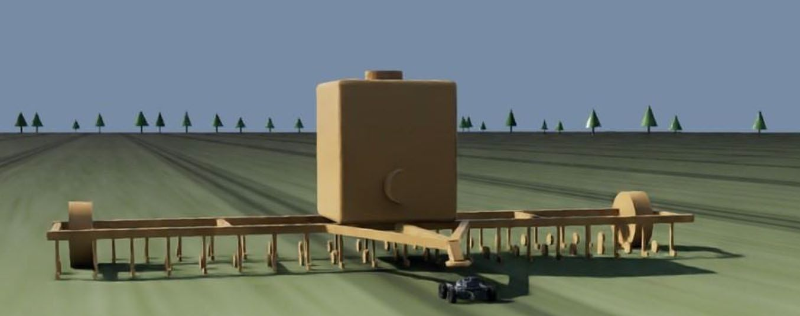
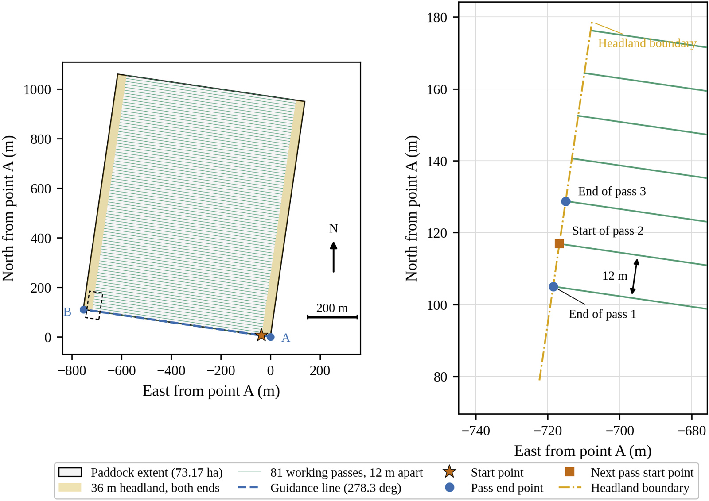

Industry partner
Knuckey Agricultural Engineering
A family engineering business in Winchelsea, Western Victoria, building machinery for controlled traffic farming. Knuckey has supplied growers from the Western District to Queensland and Western Australia across four generations, since 1917.
What Knuckey builds
The machine already exists. The driver is the missing part.
Knuckey's CTM3000 tractor and Accu-Sow seeder are built for controlled traffic farming, and its customers already run on established tramlines. Its Precision Sowing System won Australian Agricultural Machine of the Year at the 2019 Elmore Field Days. Knuckey also makes a dedicated wheel-track renovator to keep tramlines in shape from season to season.
So this project doesn't design a tractor. It investigates the autonomous navigation layer that could drive the one Knuckey already makes. Knuckey has indicated a horizon of three to five years for autonomous capability, which makes this year an early prototype meant to take technical risk out before full-scale development.

Why controlled traffic farming
A proven system that the south-east hasn't taken up
CTF confines every machine to permanent lanes spaced to match the widest implement, so wheels compact the same strips every year and the crop grows on soil nothing has driven over.
On a 1,500-hectare property the CTF gains approach $69,000 a year. Victoria's Wimmera and Western District, among Australia's most valuable broadacre grain regions, sit in the same low-uptake bracket. Australia leads the world in CTF as a farming system but trails North America and Europe in deploying autonomous farm machinery. John Deere's autonomous 8R and 9RX and Monarch's MK-V are built for Midwest row crops and for vineyards and orchards. None of the cited manufacturer material shows them validated on Australian CTF tramlines.
Source: J. Hagan, "Economics of controlled-traffic farming are undeniably clear", GRDC Groundcover, 2020, as cited in the team's final report.
Site visit 1 May 2026
What we heard at Winchelsea, and what it changed
The team visited Knuckey on 1 May 2026. These findings set the accuracy requirement, the obstacle priorities and the decision to work with the grower's equipment instead of replacing it.
| What we heard | What it means for the rover |
|---|---|
| Neighbouring passes must repeat to about ±20–50 mm, set by the seeding tine spacing. | The accuracy requirement. The rover has to match the existing guidance system, at 50 mm or better. |
| Growers pre-map paddocks by driving them with GPS on a quad bike or tractor. Satellite mapping is less accurate, and drones are awkward for following fence lines. | The rover consumes an existing map. Building one on board is out of scope. |
| Mapping and guidance run through John Deere systems, and maps can be exported. The operator prefers compatible equipment. | Accept an exported John Deere map and work alongside the existing hardware. |
| John Deere restricts its RTK corrections to approved receivers, but existing receivers can share position over a serial NMEA stream. | Take NMEA over serial from the receiver the grower already owns, rather than supply a separate one. |
| The operator's network RTK base station needs line of sight and costs about $8,000 a year. It's more accurate than satellite-delivered RTK. | Correction availability is an assumption the rover inherits, and an investment it should reuse. |
| Tramlines use 3 m wheel centres for seeding. | Fixes the wheel-track spacing for the target operation. |
| Rocks are the main obstacle, including rocks of about 400 mm and partly buried rock. They match the soil colour, and thermal sensing was suggested. | Rock detection is the main perception job, and a known weakness of stereo cameras. |
| The usual response to a rock is to steer round it or lift the seeder over it. | A production rover needs avoidance or implement lift. For the prototype, Knuckey agreed to stop-and-wait. |
| Cattle, sheep, kangaroos and people must be avoided, though they turn up less often than rocks and animals move away from machinery. | Safety-critical, but not the main operational concern. |
| Vibration during field work is significant. | Bench IMU noise figures won't hold in the field; vibration became part of RQ3. |
| Seeder widths of 3, 4 and 6 m came up. | The simulation assumed a 12 m implement, which still has to be reconciled. |
| Lower labour cost is the main benefit of autonomy. Workers don't want long shifts, and the operator wants less night supervision. | Supports the case for running machines through more of the seeding window. |
The paddock
P-Middle West, near Winchelsea
The simulated field is a real one, built from the guidance data Knuckey supplied: the grower's John Deere AB line, two WGS-84 points 762.1 m apart on a bearing of 278.28°, and a paddock area of 73.17 ha.
Dividing the area by the AB length gives a working width of 960.1 m, or 81 passes at 12 m. Trimming 36 m off each end for the headlands leaves 690.1 m of working pass. No boundary polygon exists, so coverage is measured against the geometry generated from the same line the rover follows.

What comes next
Fitting into a grower's existing kit
Compatibility with established farming systems matters more than any single feature if the rover is going to become something Knuckey's customers use.
Thanks to Knuckey Agricultural Engineering, Winchelsea, for the site visit and paddock data.